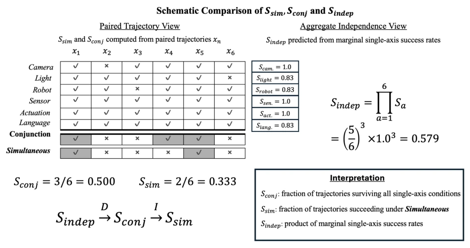
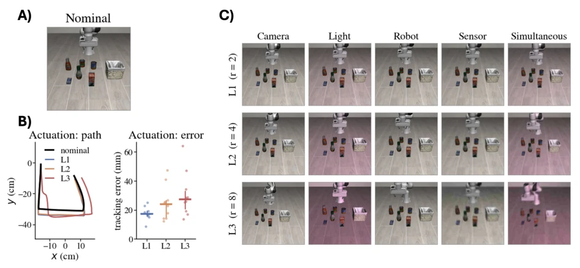
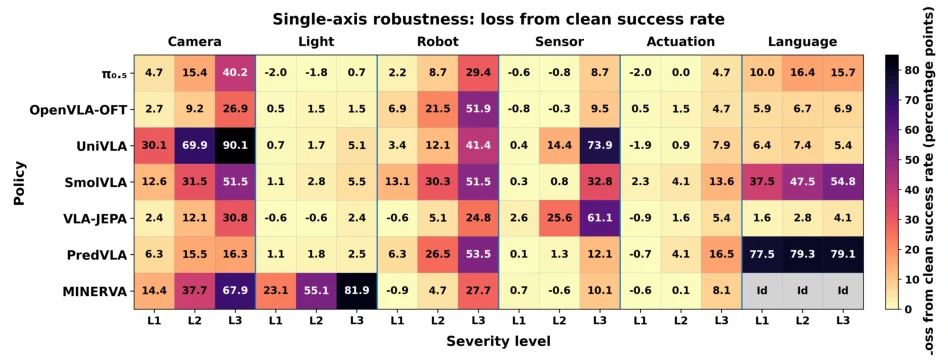
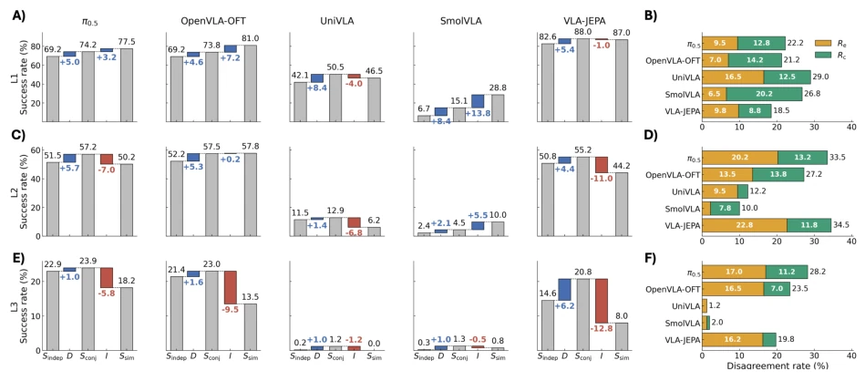

This paper pours cold water on VLA researchers obsessed with "average success rate": do not assume that passing single-axis tests guarantees rock-solid stability when multi-axes are combined. The authors use LIBERO-CTRL to prove that so-called "robustness" is a huge illusion under aggregated data. Most ironically, when "emergent failures" and "compensated successes" cancel each other out, the total success rate appears flawless, but in reality, nearly one-third of samples experienced fate reversal under both single-axis and composite conditions simultaneously. This "reporting good news but not bad news" evaluation method is simply putting the emperor's new clothes on the model. Although the experimental design is rigorous, relying solely on six-axis disturbances in a simulation environment is still far from the chaos of the real world, but at least it tore off the fig leaf of single-axis evaluation, forcing everyone to re-examine the definition of "robustness".
Existing VLA strategy evaluation generally suffers from the blind spot of "single-axis testing", i.e., testing performance under single disturbances such as camera, lighting, language, etc. separately [3, 4]. Although this evaluation method can locate single weaknesses, it cannot answer the true performance during concurrent multi-disturbances in real-world deployment. As shown in literature [3] and [4], although existing work involves combined disturbances, it lacks precise paired analysis of the same initial state under single-axis and composite simultaneous conditions. This leads to the Aggregate Success Rate potentially masking two opposite phenomena: one is all single axes succeed but fail when composite (Emergent Failures), and the other is single axes have failures but succeed when composite (Compensated Successes). Since these two phenomena may cancel each other out statistically, composite robustness appears consistent with single-axis evaluation, but the internal structure has undergone drastic changes. Therefore, there is an urgent need for a paired evaluation mechanism that can reveal this "hidden reversal", rather than relying solely on marginal success rates.

Figure 2: Schematic illustration of the success measures. Sindep is obtained from the marginal single-axis success rates, Sconj is the observed fraction of matched configurations that succeed under all six single-axis conditions individually, and Ssim is the observed success rate when the matched perturbations are applied simultaneously. The example is conceptual and does not represent experimental data.
方法Method
论文提出了LIBERO-CTRL，一种全配对的六轴扰动评估协议。其核心Pipeline是：首先构建一个包含400个固定配置（40个任务×10个初始状态）的评估集，确保所有策略在相同的初始状态和扰动参数下运行。对于每个配置，系统分别执行六项单轴扰动（相机、光照、机器人位姿、传感器噪声、执行器扰动、语言重述）和一项六轴同时扰动。关键创新在于“配对”设计：单轴扰动使用的参数值与同时扰动中的对应参数值完全一致，且初始状态严格匹配。通过这种设计，作者定义了四个关键指标：单轴独立成功率的乘积（Sindep）、单轴全成功比例（Sconj）、同时扰动成功率（Ssim）。进而将复合鲁棒性分解为两部分：D = Sconj - Sindep（单轴依赖度）和 I = Ssim - Sconj（复合效应）。更精细地，I 被进一步拆解为突发失败率（Re）和补偿成功率（Rc），即 Re = (单轴全成且复合败)/N，Rc = (单轴有败且复合成)/N。这种分解直接量化了单轴评估无法捕捉的“方向性反转”，并通过Bootstrap方法计算置信区间以排除随机性干扰。
The paper proposes LIBERO-CTRL, a fully paired six-axis disturbance evaluation protocol. Its core pipeline is: first construct an evaluation set containing 400 fixed configurations (40 tasks × 10 initial states), ensuring all strategies run under the same initial state and disturbance parameters. For each configuration, the system executes six single-axis disturbances (camera, lighting, robot pose, sensor noise, actuator disturbance, language restatement) and one six-axis simultaneous disturbance separately. The key innovation lies in the "paired" design: the parameter values used for single-axis disturbances are exactly consistent with the corresponding parameter values in simultaneous disturbances, and initial states are strictly matched. Through this design, the authors define four key metrics: the product of single-axis independent success rates (Sindep), the proportion of all single-axis successes (Sconj), and the simultaneous disturbance success rate (Ssim). Subsequently, composite robustness is decomposed into two parts: D = Sconj - Sindep (single-axis dependency) and I = Ssim - Sconj (composite effect). More finely, I is further broken down into Emergent Failure rate (Re) and Compensated Success rate (Rc), i.e., Re = (all single-axis success and composite failure)/N, Rc = (single-axis has failure and composite success)/N. This decomposition directly quantifies the "directional reversal" that single-axis evaluation cannot capture, and calculates confidence intervals via Bootstrap method to exclude random interference.

Figure 1: Illustration of LIBERO-CTRL perturbations for OBJECT task 2, configuration 0 (“pick up the salad dressing and place it in the basket”). (A) Nominal observation. (B) Actuation perturbations, which do not alter the static visual observation. The left plot shows the realised end-effector paths obtained by replaying the same open-loop command sequence under the nominal condition and under configuration 0 at L1–L3. The right plot shows the time-averaged tracking error for all ten actuation presets at each severity level; points denote individual presets, with the median and interquartile range overlaid. This panel is illustrative; the actuation normalisation scales themselves are calibrated separately on SPATIAL as described in Table 1. (C) Camera, lighting, robot-pose, sensor, and si
实验Experiments
实验在LIBERO基准的四个套件（SPATIAL, OBJECT, GOAL, LONG）上进行，测试了六款不同规模的VLA策略（如π0.5, OpenVLA-OFT, VLA-JEPA等）及MINERVA作为对照。设置了三个扰动严重程度（L1-L3）。结果显示，尽管部分策略在聚合指标上表现稳定，但配对分析揭示了高达34.5%的样本在单轴与复合条件下发生了结果反转。例如，OpenVLA-OFT在L2下，Re和Rc几乎相等（13.5% vs 13.75%），导致净效应I接近零，掩盖了四分之一的样本发生了状态翻转。VLA-JEPA在L2下则表现出显著的突发失败（Re占比复合失败的75%）。独立重评估证实这些反转并非由策略随机性引起。这表明仅看聚合成功率会严重误判模型的鲁棒性，必须报告Re和Rc。
Experiments were conducted on four suites of the LIBERO benchmark (SPATIAL, OBJECT, GOAL, LONG), testing six VLA strategies of different scales (such as π0.5, OpenVLA-OFT, VLA-JEPA, etc.) and MINERVA as a control. Three disturbance severity levels (L1-L3) were set. Results show that although some strategies performed stably on aggregated metrics, paired analysis revealed up to 34.5% of samples experienced result reversal under single-axis and composite conditions. For example, OpenVLA-OFT under L2, Re and Rc were almost equal (13.5% vs 13.75%), leading to net effect I near zero, masking that one-quarter of samples experienced state flipping. VLA-JEPA under L2 showed significant emergent failures (Re accounted for 75% of composite failures). Independent re-evaluation confirmed these reversals were not caused by strategy randomness. This indicates that looking only at aggregated success rate will seriously misjudge the model's robustness, and Re and Rc must be reported.

Figure 3: Single-axis robustness shown as clean-relative loss in success rate. Rows are policies and columns are perturbation axes at severity levels L1–L3; darker cells indicate larger degradation. MINERVA’s language entries are identity interventions.

Figure 4: Compound robustness decomposition across five policies and three severity levels. (A,B) L1, (C,D) L2, and (E,F) L3. (A,C,E) Sindep, Sconj, and Ssim are shown as absolute success rates in grey, while D = Sconj −Sindep and I = Ssim −Sconj show the corresponding changes between them. Positive changes are shown in blue and negative changes in red. Within each severity level, all policies share the same vertical scale. (B,D,F) The total disagreement rate Rd is decomposed into emergent failures Re and compensated successes Rc, shown in orange and teal, respectively, revealing opposing outcome transitions that may cancel in the signed aggregate effect I.